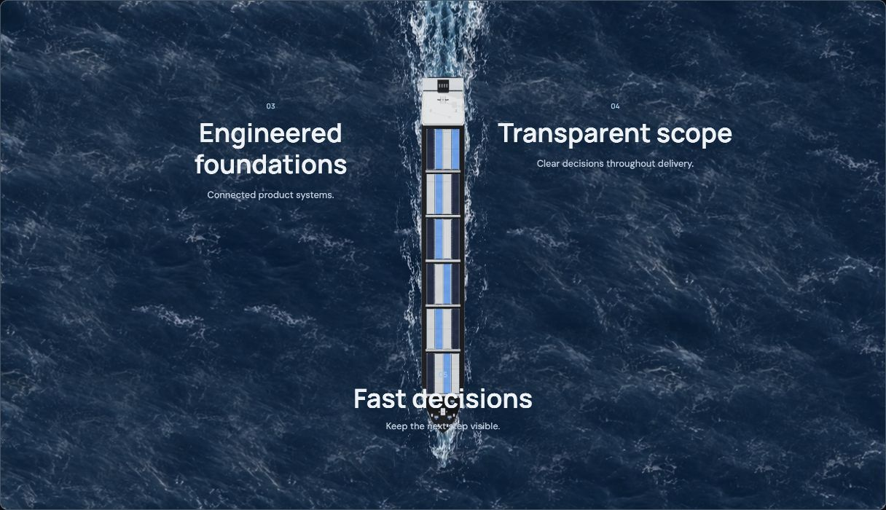
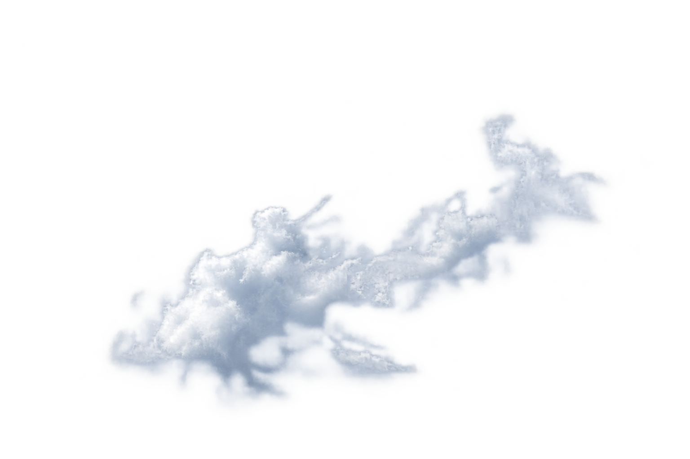
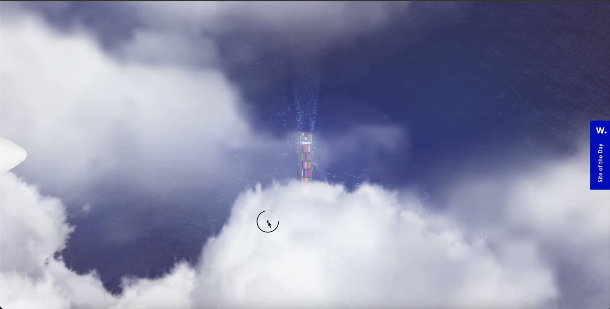

Broad cloud cover.
A diffuse veil.
Keep the approved K01–K03 shapes. Spread them over the edge of the view and soften their internal density into haze, while leaving the receding ship visible through the central gap.


Reviewed presets: First veil 77% haze / 112% softness; Cloud banks 82% haze / 52% softness. State selection and Reset restore the selected preset. Review combined scroll story ↗. Static appearance comparison. Same approved PNGs and aspect ratios in both modes; diffuse treatment uses live opacity, softer sampling and a broader halo. The ship fixture is a rendered capture, not the final animated connection. No PNG editing, new generation or video.
Cloud banks · 04:02

Use the reference for density, foggy edges and coverage. Its purple hue, white aircraft, text and marks remain reference material.
Both banks should read as vast atmosphere extending beyond the viewport, with a diffuse veil across the sea and ship. The accepted cloud silhouettes, water, vessel and jet are preserved. The specified veil and bank presets are applied. Review all layers in the live ship/cloud passage; reference parity and connected motion remain pending.